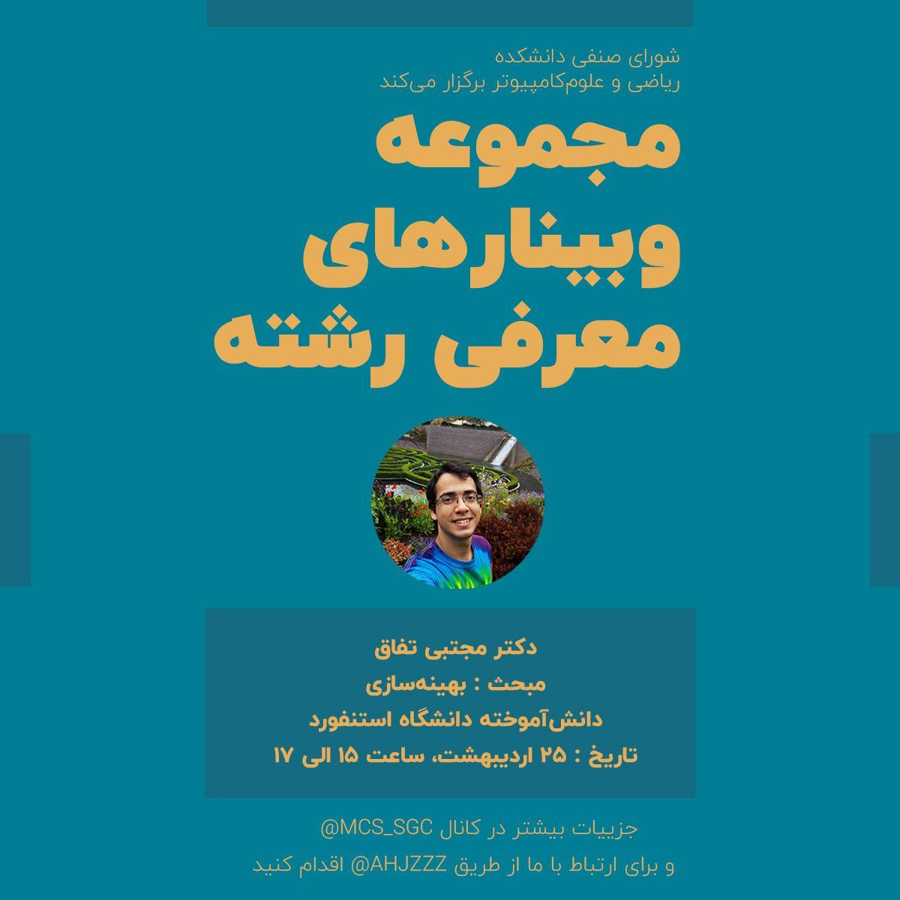

22494 Convex Optimization: Course Information
Lectures
Lectures are Sundays and Tuesdays, 9:00–10:30 am, via webinar. Click here to learn more about our webinars.
Videos of all in-class lectures will be available on OCW shortly after the end of the semester, but should not be considered a substitute for coming to class. You are encouraged to attend the live webinars but the recorded videos are available here.
Office hours
Mojtaba Tefagh's office hours: Sundays, 10:30–11:30 am, via webinar.
TA office hours:
The TAs will offer informal working sessions, that will
also serve as their office hours, starting the second week of class. Attendance is not required.
Artin Tajdini: Wednesdays, 2:00–3:00 pm, via webinar
Parsa Mashayekhi: Tuesdays, 3:00–4:00 pm, via webinar
Mojtaba Zare: Mondays, 3:00–4:00 pm, via webinar
Textbook and optional references
The course materials are the same as EE364a (Stanford) and EE236b (UCLA). Specifically, the textbook and lecture slides can be found here.
Course requirements and grading
Requirements:
Weekly homework assignments, due each Friday 5pm, starting February 21. You are allowed, even encouraged, to work on the homework in small groups, but you must write up your own homework to hand in. Each question on the homework will be graded on a scale of {0, 1, 2}. Some assignments require you to use convex programming software such as CVX (Matlab), CVXPY (Python), Convex.jl (Julia), or CVXR (R), which we refer to as CVX*.
Midterm quiz. The format is an in-class, 75 minute, closed book, closed notes midterm scheduled for Sunday April 5.
Final exam. The format is a 24 hour take home, scheduled for the last week of classes, nominally Sunday June 28–29.
Grading: Homework 20%, midterm 10%, final exam 70%. These weights (\(\tilde{x}\)) are approximate; we reserve the right to change them later.
Update. The final weights are the solution of the following linear program
\[
\begin{array}{ll}
\mbox{maximize} & c^Tx + 2(1-a)\\
\mbox{subject to} & 1^Tx = 1^T\tilde{x} \\ & \dfrac{1}{a} \leq \dfrac{x_i}{\tilde{x}_i} \leq a, \quad 1\leq i\leq 3
\end{array}
\]
where \(c_1\), \(c_2\), and \(c_3\) are the normalized homework, project, final exam grades, respectively.
Prerequisites
Good knowledge of linear algebra (as in 22255), and exposure to probability. Exposure to numerical computing, optimization, and application fields helpful but not required; the applications will be kept basic and simple.
You will use one of CVX (Matlab),
CVXPY (Python),
Convex.jl (Julia),
or CVXR (R),
to write simple scripts, so basic familiarity with elementary programming will be required. We refer to CVX, CVXPY, Convex.jl, and CVXR collectively as CVX*.
Quizzes
This class has no formal quizzes. There are online quizzes on this page. These are just for fun; they are not graded and your responses are not logged.
Catalog description
Concentrates on recognizing and solving convex optimization problems that arise in applications. Convex sets, functions, and optimization problems. Basics of convex analysis. Least-squares, linear and quadratic programs, semidefinite programming, minimax, extremal volume, and other problems. Optimality conditions, duality theory, theorems of alternative, and
applications. Interior-point methods. Applications to signal processing, statistics and machine learning, control and mechanical engineering, digital and analog circuit design, and finance.
Course objectives
to give students the tools and training to recognize convex optimization problems that arise in applications
to present the basic theory of such problems, concentrating on results that are useful in computation
to give students a thorough understanding of how such problems are solved, and some experience in solving them
to give students the background required to use the methods in their own research work or applications
Intended audience
|
 |
This course should benefit anyone who uses or will use scientific computing or optimization in engineering or related work (e.g., machine learning, finance). More specifically, people from the following departments and fields: Mathematical Sciences (especially computer science and applied mathematics); Computer Engineering (especially areas like machine learning, robotics, computer graphics, algorithms & complexity, computational geometry); Electrical Engineering (especially areas like signal and image processing, communications, control, EDA & CAD). The course may be useful to students and researchers in several other fields as well: Computational Mathematics, Operations Research, Statistics, Economics. Please click on the image to the left for more information.
|
|